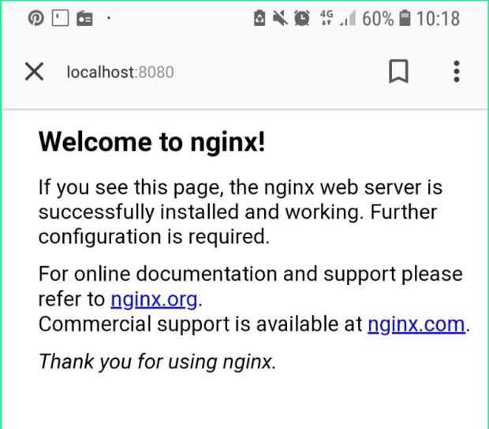
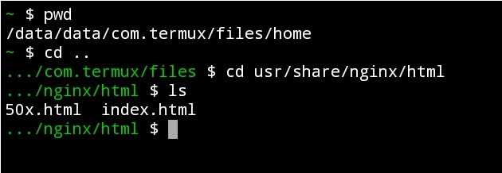

Como configurar um Web server no celular Android
Primeiro baixe o aplicativo Termux, em seguida digite:
pkg update
Agora vamos insalar o NGINX. Que é um servidor leve de HTTP, proxy reverso, proxy de
e-mail IMAP/POP3. O Nginx consome menos memória que o Apache, pois lida com requisições Web do tipo "event-based Web server", e o Apache é baseado no "process-based server", podendo trabalhar juntos.
Dando continuidade com a instalação, vamos instalar o Nginx.
pkg install nginx
Para ativar, digite:
nginx
Feito isso, agora vamos ver se está funcionando. Abra o navegador e digite na barra de pesquisa:http://localhost:8080
Se estiver tudo certo, ira aparecer a seginte mensagem na pagina:

Pronto, agora o seu web server está funcionando. Agora e só editar o arquivo index.html e salvar. Siga os passos abaixo para instalar um editor de texto e editar o index.
Agora vamos editar nosso arquivo html, vamos tirar essa mensagem de boas vindas e colocar um simples olá mundo na tela. Para conseguir editar o arquivo com o termux, vamos instalar um editor de texto, eu escolhi o micro, mas existe outros editores por aí, então fica a seu criterio escolher qual o melhor editor, a instalação e igual para todos eles.
pkg install micro
Agora procure o index que vai ser modificado,
Vamos começar digitando pwd o comando pwd escreve na tela o caminho completo da pasta atual.
Essa vai ser a pasta: /data/data/com.termux/files/home digite cd .. para voltar uma pasta, pois está na pasta home, e queremos a usr depois cd usr/share/nginx/html com esse comando vamos entrar diretamente na pasta html. ls para listar os arquivos. Segue o exemplo na imagem abaixo:

vamos abrir o index para editar:
editor index.html
Pronto, arquivo aberto. Pode editar do jeito que quiser, vídeo demonstrando a alteração do index e salvando o arquivo logo abaixo:
Vejá também:
Baixe videos do instagram apenas com seu navegador